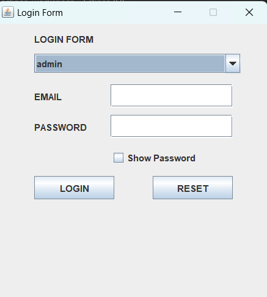

1. DATABASE
Admin table:
acts as the central hub for user accounts with administrative privileges. It stores information critical for user management and system security.Customer table:
The Customer table in a tailoring management system is the backbone for storing information about your clientele. It allows you to track their preferences, order history, and build relationships.A Reserve table:
The Reserves table acts as a central hub for tracking fabric specifically allocated for upcoming orders or projects. It prevents overbooking of fabric inventory and ensures accurate material allocation.A user table:
The Users table in a tailoring management system forms the foundation for user accounts and access control. It stores information about all individuals who interact with the system, typically categorized into different user types.
2 . JAVA PROGRAMMING
Introduction
In this chapter I will be describing how powerful generalpurpose programming language was used to create the analyzed system. Under this chapter I will undergo full detail of how everything will function together with database that have been describe above and how it cope with full analyzed systemTools used to develop this system in java programming:
- Eclipse IDE: an integrated development environment used in computer programming. It contains a base workspace and an extensible plug-in system for customizing the environment. It is the second-most-popular IDE for Java development, and, until 2016, was the most popular.
- JAR stands for Java Archive. It's a file format based on the popular ZIP file format and is used for aggregating many files into one. Although JAR can be used as a general archiving tool, the primary motivation for its development was so that Java applets and their requisite components. MySQL Connectors. MySQL provides standards-based drivers for JDBC, ODBC, and .Net enabling developers to build database applications in their language
-
Forms in my Tailoring management Project and their descriptions
-
Login form
button login, Reset are there with different direction and function in the system but all having same goal.this button is dedicated for system admin/customer to login so that he/she can do more in the system, like adding, many more.this button is dedicated for system to eraser all data entry in order to enter new data for customer
-
Admin Login
As we have described in above page login form will direct as on this admin login page. 
-
DEFAULT MESSAGE

-
ADMINISTRATOR HOME PAGE
With this page we will be informed what tasks can system administrator do in this system
After the user inputs the correct credentials and they meet what is stored in the database he is navigated to the dashboard where he can use different features of the system . -
VIEW LIST OF SERVICE
We find service id, name, price, quantity
-
3. CONCLUSION
By concluding this chapter concerns with java programming especially in my developed system, we can say that I have final product that I was expecting to have it, the manipulation of data is going well the design is there with special appearance, but there much to go on and that need to be improved will be gained from external view apart from system developer